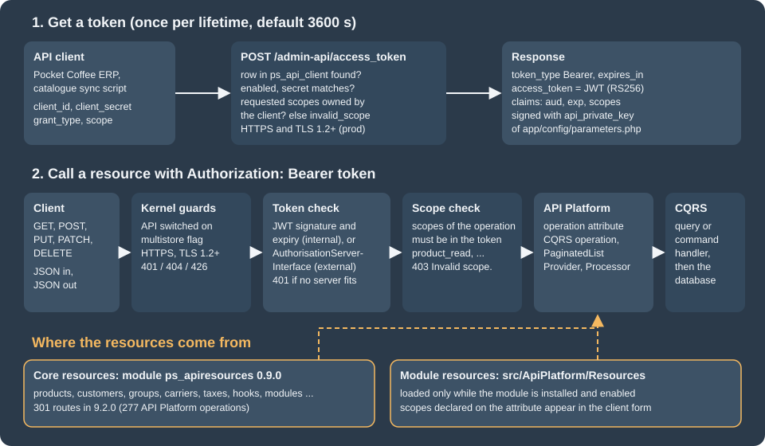

Admin API
|
This content was generated with the assistance of AI and should be verified against the official documentation before being relied on in production. |
This page was written against PrestaShop 9.2.0 (released 2026-09-30, Symfony 6.4.46, PHP 8.5.12 in the official Docker image,
api-platform/core 3.4, league/oauth2-server 8.5) and the ps_apiresources module 0.9.0 that ships the core resources, and
it was checked on 2026-10-27. The Admin API exists only in PrestaShop 9 and later; PrestaShop 8.x and 1.7 have only the
Webservice. It is part of the open-source core, so every edition and every
host has it, and it is enabled by default after an installation. The OpenAPI document that the project publishes still
reports info.version 0.1.0 and the official documentation does not label the API as stable or as experimental, so
this page treats it as a maturing API: the resource list grows with every minor release and a minority of operations are
flagged experimental.
The Admin API is the modern way to read and change a shop from another system: an ERP, a product information manager, a
marketplace connector, a script. A client authenticates with OAuth2 (the client credentials grant, which has no human in
the loop), receives a short-lived JWT access token that lists the scopes it may use, and then calls JSON endpoints under
/admin-api. Behind each endpoint sits the same CQRS command or query that the back office uses, so an API call and a
click in the back office go through the same business rules. This page explains the request path, the API clients and
tokens, every scope family, the calls that were run against the core resources, the error behaviour (which differs
between the debug and the production mode), and then shows how a module publishes its own resource. It follows the
CQRS and domain page (the commands and queries that the API wraps), the
module basics page and the
Webservice API page, and it precedes the
CLI commands page that creates API clients from the shell.
The running example is Pocket Coffee. Its ERP reads products and manages the Coffee Club customer group, a catalogue
synchronisation job creates and prices products, and its roastery records the roast date of each product through a small
module, pcfhapi, that exposes a roast-dates resource. The roast date is the data behind the "roast date badge" that
the other pages of this subsection show on the product page. The order part of the Pocket Coffee API example, "create an
order", is not possible with the Admin API of 9.2.0, because no order resource exists yet; the page on the
Webservice covers orders.
What was run and what was not is listed in What was run and what was not. Every command line below that shows
https://shop.example.test was run in the same form against a local PrestaShop 9.2.0 in the Docker image; the local shop
answers on plain HTTP, which the Admin API accepts only in debug mode after a configuration switch that is described in
HTTPS and the debug mode switch.
The Admin API at a glance
The picture follows one request from the token endpoint to the database.

The same flow as a sequence, with the three outcomes that matter in practice: an accepted call, a call whose token lacks a scope, and a call after the token has expired.
PrestaShop plays two roles. By default it is both the authorization server (it issues the tokens, because it owns the clients) and the resource server (it hosts the resources). An external authorization server, for example Keycloak, can issue the tokens instead, see External authorization server; the shop is always the resource server.
Webservice or Admin API
The older Webservice (/api, one key per integration, XML or JSON, ObjectModel based) is still present in 9.2.0. The two
APIs overlap but are not interchangeable.
| Webservice | Admin API | |
|---|---|---|
Introduced |
PrestaShop 1.4 and still present in 9.2.0 |
PrestaShop 9.0 |
Entry point |
|
|
Authentication |
A webservice key sent as the user name of HTTP Basic authentication |
OAuth2 client credentials, then |
Permissions |
Per key and per resource: GET, PUT, POST, DELETE, HEAD |
Per client scope, |
Data model |
ObjectModel classes and their |
CQRS commands and queries and API Platform resource classes |
Formats |
XML by default, JSON with |
JSON only ( |
HTTPS |
Not enforced |
Enforced outside the debug mode, TLS 1.2 or newer |
Resources in 9.2.0 |
About 80 resource pages, including orders, stock and carts |
277 operations on more than 35 resource families, no orders and no stock yet |
Extension by a module |
|
An API Platform class in |
Use the Admin API for new integrations and for everything it already covers; use the Webservice for what it does not cover yet (orders, stock levels) and on PrestaShop 8.x. Both can be active at the same time.
Switching the API on, HTTPS and the debug mode switch
Switches
The Admin API is on after an installation. Three things can turn it off or limit it:
-
the configuration value
PS_ENABLE_ADMIN_API(back office: Advanced Parameters > Admin API > Configuration): when it is0, every request to/admin-apiis answered with a 404; -
a multistore installation: when the multistore feature is active and the feature flag
admin_api_multistoreis disabled (the default), the whole API answers 404 as well; the flag and the shop context parameters are described in Multistore; -
the web server:
/admin-apiis a separate front controller,admin-api/index.php, with its own Symfony kernel and its own cache directory,var/cache/<env>/admin-api. It needs the same URL rewriting as the rest of the shop.
# does the API answer? (a 405 or 401 means yes, a 404 means it is off or multistore blocks it)
curl -s -o /dev/null -w '%{http_code}\n' https://shop.example.test/admin-api/access_token
# turn the API off or on from the console
bin/console prestashop:config set PS_ENABLE_ADMIN_API --value=0
bin/console prestashop:config set PS_ENABLE_ADMIN_API --value=1HTTPS and the debug mode switch
Outside the debug mode the API insists on HTTPS and on TLS 1.2 or newer. The check runs on every request except the profiler and the documentation routes:
-
plain HTTP is answered with HTTP 401 and the JSON string
"Use HTTPS protocol"; sendingX-Forwarded-Proto: httpsdoes not change that, because the shop looks at the connection as the web server reports it; -
when the web server reports a TLS version below 1.2 (the variable
SSL_PROTOCOLof mod_ssl, for exampleTLSv1), the answer is HTTP 426 with the headerUpgrade: tls/1.2, tls/1.3and the body"TLSv1.2 or higher is required."; -
with another web server that does not provide
SSL_PROTOCOL, the check falls back to "is the request secure?".
In debug mode only, the check can be disabled with the configuration value PS_ADMIN_API_FORCE_DEBUG_SECURED set to
0 (back office: Advanced Parameters > Admin API > Configuration, option "Force security in debug mode", visible after
the debug mode is enabled in Advanced Parameters > Performance). Production mode is always strictly secured. This is
why a local Docker shop with PS_DEV_MODE=1 can be called over http://localhost:8080 while the same shop with
PS_DEV_MODE=0 refuses the call.
# local development shop only, debug mode on
bin/console prestashop:config set PS_ADMIN_API_FORCE_DEBUG_SECURED --value=0
# what a production shop answers over plain HTTP
curl -s -i -X POST http://shop.example.test/admin-api/access_token -d grant_type=client_credentials
# HTTP/1.1 401 Unauthorized
# "Use HTTPS protocol"The behaviour above was reproduced on a production-mode container of the same image, with the HTTPS and TLS variables
supplied by the Apache configuration to simulate a TLS terminator: plain HTTP gave 401, SSL_PROTOCOL=TLSv1 gave 426 and
SSL_PROTOCOL=TLSv1.3 gave normal answers.
API clients
An API client is a row in the table ps_api_client: client_id, client_name, client_secret (stored hashed, shown
only once), description, enabled, scopes (a JSON array), external_issuer and lifetime (the token lifetime in
seconds, default 3600). A shop normally has one client per integration, so that a leaked secret can be revoked without
touching the others and so that each integration gets only the scopes it needs.
| Field | Meaning |
|---|---|
Client name |
A free label for people. |
Client ID |
The identifier used in the token request. The official page asks for no spaces and no special characters; dashes were accepted. It must be unique. |
Description |
A free text. |
Lifetime |
Seconds that an access token of this client stays valid. A short lifetime limits the damage of a stolen token; a long one saves token requests. |
Enabled |
A disabled client cannot get tokens: the token endpoint answers |
Scopes |
The scopes the client is allowed to ask for. Tokens can only carry a subset of them. |
External issuer |
The identifier of an external authorization server that issued the client, empty for clients managed by the shop. |
There are three ways to create a client; all three produce the same row.
In the back office
Advanced Parameters > Admin API lists the clients. Add new API Client opens the form with the fields above and a scope picker; Generate client secret and save stores the client and shows the secret exactly once. Copy it into the secret store of the calling system at that moment; a lost secret cannot be recovered, only replaced by a new client.
With the console
bin/console prestashop:api-client create pocket-coffee-erp \
--name="Pocket Coffee ERP" \
--description="Reads products and manages the Coffee Club group" \
--scopes=product_read,customer_group_read,customer_group_write,api_client_read \
--timeout=900The command prints a table with the generated secret (32 characters). Its options are --name, --description
(default Created by CLI command.), --scopes (comma separated), --all-scopes (every scope the shop knows, 71 in 9.2.0
plus the scopes of installed modules), --timeout (token lifetime in seconds), --secret-only (print only the secret, handy
for scripts) and --secret[=SECRET] (force a value). Three details were observed on 9.2.0. The action delete removes
a client by its client ID. A forced secret that the validator does not accept (a short readable string was tried) makes the
command fail with Invalid api client secret, but the client row had already been written, so the next create of the
same ID failed with This value is already used until the client was deleted. And a scope name that no installed API
declares is refused (The scopes bogus_scope are not associated to any installed API.), so create clients after the modules
that bring scopes are installed.
Through the API itself
A client that owns api_client_write can manage clients. The secret is returned only in the answer to the creation.
curl -s -X POST https://shop.example.test/admin-api/api-clients \
-H "Authorization: Bearer ${PS_TOKEN}" -H 'Content-Type: application/json' \
-d '{"clientId":"pocket-coffee-tmp","clientName":"Temporary","description":"Created through the Admin API",
"enabled":true,"lifetime":600,"scopes":["product_read"]}'
# HTTP 201 {"apiClientId":6,"secret":"<shown once>"}
curl -s -H "Authorization: Bearer ${PS_TOKEN}" https://shop.example.test/admin-api/api-clients/6
# {"apiClientId":6,"clientId":"pocket-coffee-tmp","clientName":"Temporary","description":"Created through the Admin API",
# "externalIssuer":null,"enabled":true,"lifetime":600,"scopes":["product_read"]}
curl -s -X PATCH -H "Authorization: Bearer ${PS_TOKEN}" -H 'Content-Type: application/json' \
https://shop.example.test/admin-api/api-clients/6 -d '{"enabled":false}' # HTTP 200, the client is now disabled
curl -s -X DELETE -H "Authorization: Bearer ${PS_TOKEN}" https://shop.example.test/admin-api/api-clients/6 # HTTP 204After the PATCH above, a token request with the disabled client’s credentials was answered with invalid_client.
Information about the calling client
Whatever token a client holds, GET /admin-api/api-clients/infos returns the row of the client that owns the token,
including every scope the client may use (not only those in the current token):
curl -s -H "Authorization: Bearer ${PS_TOKEN}" https://shop.example.test/admin-api/api-clients/infos
# {"apiClientId":3,"clientId":"pocket-coffee-erp","clientName":"Pocket Coffee ERP",
# "description":"Reads products and manages the Coffee Club group","externalIssuer":null,"enabled":true,"lifetime":900,
# "scopes":["product_read","customer_group_read","customer_group_write","api_client_read"]}The official page names this route /admin-api/api-client/info in the text and /admin-api/api-client/infos in its curl
example. Both answer 404 on 9.2.0; the real route is /admin-api/api-clients/infos.
Getting an access token
The client credentials grant needs one POST to /admin-api/access_token. The body is form encoded (-d in curl;
--form multipart also works), not JSON.
curl -s -X POST https://shop.example.test/admin-api/access_token \
-d grant_type=client_credentials \
-d client_id="${PS_CLIENT_ID}" \
-d client_secret="${PS_CLIENT_SECRET}" \
-d scope="product_read customer_group_read customer_group_write"| Parameter | Meaning |
|---|---|
|
Always |
|
The credentials of the API client. |
|
The scopes the token will carry, separated by spaces (a comma separated list was accepted as well). Every scope must be in
the client’s own list, otherwise the request fails with |
A successful answer:
{
"token_type": "Bearer",
"expires_in": 900,
"access_token": "<jwt>"
}The access token is a JWT signed with RS256. The shop generates a 2048 bit RSA key pair at installation time and stores it
in app/config/parameters.php as api_private_key and api_public_key; the token is verified against the public key on
every call, with no database lookup. Decoding the payload (a JWT payload is only base64 encoded, never secret) of a token
requested with two scopes gives:
{
"aud": "pocket-coffee-erp",
"jti": "<random id>",
"iat": 1793115520.06,
"nbf": 1793115520.06,
"exp": 1793116420.06,
"sub": "",
"scopes": ["is_authenticated", "product_read", "customer_group_read"]
}aud is the client ID, exp is iat plus the lifetime of the client, and scopes is what the resource server checks. A
client that needs two different sets of scopes should ask for one token per set: a token cannot be widened afterwards. The
back-up of parameters.php therefore matters: if the key pair were regenerated, every token and every integration that
caches one would be rejected until it asked for a new token.
Token errors
| Request | Answer | Cause |
|---|---|---|
Wrong secret, unknown or disabled client |
401 |
The credentials do not match an enabled client. |
A scope the client does not own, or a scope that does not exist |
400 |
The |
|
400 |
Only client credentials is implemented. |
|
405 with |
The endpoint accepts POST only. |
Plain HTTP in production mode |
401 |
Scopes
A scope is a permission on one resource family. Core scopes are named <resource>_read and <resource>_write, and they
come from the scopes: list of each operation attribute: a GET operation requires the read scope, the operations that
change data require the write scope. A call is accepted only when every scope the operation declares is in the token.
Having product_write does not imply product_read (a token with only product_write was answered 403 on
GET /products); ask for both when a script reads a product before updating it. On a mismatch the answer is HTTP 403 with
the detail Invalid scope..
The client created with --all-scopes on the 9.2.0 test shop received 71 scopes (plus is_authenticated in each token):
| Family | Scopes (each as _read and _write unless noted) |
|---|---|
Catalogue |
|
Customers and sales |
|
Shipping, tax and geography |
|
Shop administration |
|
The exact set depends on the version and, for module resources, on the modules that are installed and enabled. List what
the shop really knows with the all-scopes client, or read the components.securitySchemes.oauth.flows.clientCredentials.scopes
object of the OpenAPI document that the project publishes.
Good practice, from the project’s own recommendation: request the smallest set of scopes for each token, give each
integration its own client with a short lifetime, never give an integration api_client_write or module_write unless it
manages clients or modules, and keep the secret in the secret store of the integration (an environment variable such as
PS_CLIENT_SECRET), never in the repository.
Scopes of a module resource appear in the client form as soon as the module is installed and its resource is loaded. On
9.2.0 the scope is, however, accepted by the token endpoint only while the module is enabled: with pcfhapi disabled, a
token request for pcfhapi_roast_date_read was answered with invalid_scope (and the routes returned 404), and both worked
again after the module was enabled and the API cache was cleared. The official page says the scopes of an installed module
can be assigned before the module is enabled; plan the module deployment accordingly and test it on your version.
Calling the core resources
All calls send Authorization: Bearer <jwt>. Collections answer a JSON envelope; single resources answer the object.
The examples below were run against the 9.2.0 test shop; the lines that start with # show the shape of the answer, with
long fields shortened.
Listing and paginating
curl -s -H "Authorization: Bearer ${PS_TOKEN}" \
"https://shop.example.test/admin-api/products?limit=2&orderBy=productId&sortOrder=desc"
# {"totalItems":19,"orderBy":"productId","sortOrder":"desc","limit":2,"filters":[],
# "items":[{"productId":19,"enabled":true,"name":"Customizable mug","quantity":300,
# "priceTaxExcluded":13.9,"priceTaxIncluded":13.9,"category":"Home Accessories"}, ...]}
curl -s -g -H "Authorization: Bearer ${PS_TOKEN}" \
"https://shop.example.test/admin-api/products?filters[name]=mug&limit=3&offset=0"
# {"totalItems":5,"orderBy":"productId","sortOrder":"asc","limit":3,"filters":{"name":"mug"},"items":[...]}The query parameters of a paginated collection are limit, offset, orderBy, sortOrder (asc or desc) and
filters[<field>]=<value>. Notes from the runs:
-
The default page size is not the same on every resource:
/productsanswered withlimit20,/customers/groupsand/search-aliaseswith 10, although the official page says 50. A client should always sendlimititself and loop onoffsetuntiloffset + limit >= totalItems. -
A very large
limitwas accepted (limit=1000returned all 22 products); do not rely on a maximum. -
-g(curl’s "globoff") is needed so that curl does not interpret[name]in the URL. -
An unknown filter key is echoed back in
filtersand ignored, so a typo silently returns everything. An unknownorderByvalue reaches the database and fails with an HTTP 500 (Unknown column ... in 'order clause'). -
Fields of the filter and
orderByare the field names of the list DTO (productId,name), except on resources that map them to column names, see Mapping between the API and the CQRS layer. -
Collections built on a CQRS query that is not paginated (
CQRSGetCollection) answer a plain JSON array without envelope.
Reading, creating, updating and deleting
# create a product (type is one of standard, pack, virtual, combinations)
curl -s -X POST -H "Authorization: Bearer ${PS_TOKEN}" -H 'Content-Type: application/json' \
https://shop.example.test/admin-api/products \
-d '{"type":"standard","names":{"1":"Starter kit","2":"Kit de inicio"}}'
# HTTP 201 {"productId":21,"type":"standard","enabled":false,"names":{"en-US":"Starter kit","es-ES":"Kit de inicio"}, ...}
# change only some fields (PATCH, partial update)
curl -s -X PATCH -H "Authorization: Bearer ${PS_TOKEN}" -H 'Content-Type: application/json' \
https://shop.example.test/admin-api/products/21 \
-d '{"priceTaxExcluded":24.00,"reference":"PC-KIT-001","enabled":true,"weight":1.2}'
# HTTP 200, the whole product is returned: "enabled":true,"priceTaxExcluded":24.0,"reference":"PC-KIT-001","weight":1.2 ...
curl -s -H "Authorization: Bearer ${PS_TOKEN}" https://shop.example.test/admin-api/products/21
curl -s -X DELETE -H "Authorization: Bearer ${PS_TOKEN}" https://shop.example.test/admin-api/products/21 # HTTP 204Things to know about those calls:
-
Multilingual fields (
names,descriptions,localizedNames) are objects. On input the keys may be language IDs ("1","2") or locales ("en-US"); on output they are always locales. On the test shop language 1 isen-USand language 2 ises-ES; look up the IDs of your shop first (GET /admin-api/languages, scopelanguage_read, or the back office list of languages). -
A POST answers 201 with a
Locationheader that points to the new resource, followed by a_tokenquery parameter that belongs to the back office. The API ignores the token, so build the follow-up URL from the returned ID, not from the header. -
PATCHacceptsContent-Type: application/jsonandapplication/merge-patch+json; any other type is answered with HTTP 415 and the list of supported types, and an unsupportedAcceptsuch asapplication/ld+jsonwith HTTP 406. -
PUTreplaces the whole resource: every field of the command is required and a missing field is treated as empty. PreferPATCHwhen the resource offers it. The customer group resource is an example of a PUT-only resource. -
Resource IDs of not-yet-existing objects return 404 with the detail of the domain exception (for example
Group #999 was not found) in debug mode.
The Pocket Coffee Coffee Club group, created and edited through the API with the scopes customer_group_read and
customer_group_write:
curl -s -X POST -H "Authorization: Bearer ${PS_TOKEN}" -H 'Content-Type: application/json' \
https://shop.example.test/admin-api/customers/groups \
-d '{"localizedNames":{"1":"Coffee Club","2":"Club del Cafe"},"reductionPercent":10.0,
"displayPriceTaxExcluded":false,"showPrice":true,"shopIds":[1]}'
# HTTP 201 {"customerGroupId":5,"localizedNames":{"en-US":"Coffee Club","es-ES":"Club del Cafe"},
# "reductionPercent":10.0,"displayPriceTaxExcluded":false,"showPrice":true,"shopIds":[1]}
curl -s -X PUT -H "Authorization: Bearer ${PS_TOKEN}" -H 'Content-Type: application/json' \
https://shop.example.test/admin-api/customers/groups/5 \
-d '{"localizedNames":{"1":"Coffee Club","2":"Club del Cafe"},"reductionPercent":12.5,
"displayPriceTaxExcluded":false,"showPrice":true,"shopIds":[1]}'
# HTTP 200 ... "reductionPercent":12.5 ...The official page writes the customer group routes as /admin-api/customers/group/{id}; on 9.2.0 the routes are
/admin-api/customers/groups and /admin-api/customers/groups/{customerGroupId}, and the singular form answers 404.
A collection that is paginated by a CQRS query rather than by a grid, GET /admin-api/products/{productId}/combinations
(the CQRSPaginate operation), answered for the demo product 1:
curl -s -H "Authorization: Bearer ${PS_TOKEN}" "https://shop.example.test/admin-api/products/1/combinations?limit=2"
# {"totalItems":8,"orderBy":"id_product_attribute","sortOrder":"asc","limit":2,"filters":[],
# "items":[{"productId":1,"combinationId":1,"name":"Size - S, Color - White","default":true,"reference":"demo_1",
# "quantity":300,"attributes":[{"attributeGroupId":1,"attributeGroupName":"Size", ...}]}, ...]}Source: PrestaShop devdocs: CQRSPaginate
Errors
A failing call answers a JSON document in the style of RFC 2616 section 10 (type, title, status, detail, and in
debug mode class and a trace):
{
"type": "https://tools.ietf.org/html/rfc2616#section-10",
"title": "An error occurred",
"status": 500,
"detail": "Group #999 was not found",
"class": "PrestaShop\\PrestaShop\\Core\\Domain\\Customer\\Group\\Exception\\GroupNotFoundException",
"trace": []
}The important point is that the status field of this body is not always the HTTP status of the response. In the
runs above the HTTP status was 404 while the body said 500; the HTTP status is the one to use. In debug mode the body
carries the class name and the full stack trace; in production mode only "detail": "Internal Server Error", so a client
cannot tell a validation problem from a missing object by the body. Plan integration logs around the HTTP status and the
request, and read the shop’s own logs (var/logs) for the reason.
| HTTP status | Typical cause |
|---|---|
400 |
Missing constructor argument of a command ( |
401 |
No |
403 |
|
404 |
The object does not exist (domain exception mapped to 404), the route does not exist, the API is switched off, or the operation is experimental and hidden in production mode. |
405 |
The route exists for another HTTP method. In production mode the answer is an HTML error page, not JSON. |
406, 415 |
Unsupported |
422, 500 |
Validation failures of the domain layer, mapped by |
What the Admin API covers in 9.2.0
On the test shop bin/console debug:router --app-id=admin-api listed 301 routes, 277 of them API Platform operations,
over these resource families: products (21 routes), customers (16), attributes (15), features (12), modules (11), addresses
(11), suppliers (10), categories (10), discounts (9), zones, tax rules groups and carriers (8 each), taxes (7), titles,
search engines, order return states, order messages, manufacturers, extra property definitions and API clients (6 each),
stores, search aliases and countries (5), webservice keys, hooks and contacts (4), tax rules, profiles and attachments (3),
and a few more with one or two routes (showcase cards, order returns, tabs, languages, employees, customer groups, cart
rules).
The coverage is a work in progress and the project measures it:
-
bin/console prestashop:list:commands-and-querieslisted 510 CQRS classes (506 of the core and the four of thepcfhapimodule below, because the command lists the classes of every module), 140 of them with an API endpoint (--hasApiEndpoint=1), 137 of those in the core, and 370 without (--hasApiEndpoint=0). The column is a heuristic: theSetRoastDateCommandof the module, which the PATCH operation below uses, is reported without an endpoint; -
bin/console prestashop:api:generate-tracking-table --skip-github -o tracking.mdwrote a Markdown report that counted 501 endpoints to implement, 190 of them implemented (37.9%) and 9 excluded as irrelevant for the Admin API.
There is no orders, stock or carts write resource, no reporting and no import, so a Pocket Coffee integration that
needs to create orders or to set stock quantities must use the Webservice (see the page on the
Webservice API) or add its own resource. There is no interactive
documentation either: the official page says Swagger and ReDoc are served at /admin-api/docs.html and the collection at
/admin-api/docs.json, but on 9.2.0 these routes, and /admin-api/docs, answered 404 and the API Platform kernel
configuration has enable_docs, enable_swagger and enable_swagger_ui set to false. The OpenAPI document of the
project (https://devdocs.prestashop-project.org/9/admin-api/swagger-doc/openapi.json) can be imported into Postman or any
OpenAPI client instead.
Experimental operations
Operations declared with experimentalOperation: true (seven resource files of ps_apiresources in 9.2.0, among them
/search-aliases, tax rules and the discounts) are controlled by the feature flag admin_api_experimental_endpoints.
The metadata decorator filters them out unless the flag is enabled or the kernel runs in debug mode. That was visible on
the test shop: on the debug-mode shop GET /admin-api/search-aliases answered 200 although the flag was disabled; on the
production-mode container of the same image the route was not served (405 HTML page). Develop against a production-mode
copy before relying on an endpoint, and expect experimental operations to change between minor versions. The second
flag, admin_api_multistore, is described next.
bin/console prestashop:feature-flag list | grep admin_api
# | admin_api_multistore | env,dotenv,[db] | Disabled |
# | admin_api_experimental_endpoints | env,dotenv,[db] | Disabled |Multistore
When the multistore feature is active, the Admin API needs to know which shop an operation targets. Support is behind the
feature flag admin_api_multistore (back office: Advanced Parameters > New & Experimental Features); while the flag is
disabled, an installation with the multistore feature active answers 404 on every /admin-api request. With the flag
enabled every request must carry exactly one of these parameters, in the query string or, for POST, PUT and PATCH, in the
JSON body, otherwise the answer is 400:
| Parameter | Type | Target |
|---|---|---|
|
integer |
One shop. |
|
integer |
Every shop of a group. |
|
array or comma separated string |
A given set of shops. |
|
flag |
Every shop; the value is ignored, the presence of the parameter counts. |
Many resources also expose a shopIds property, which is not the request context: it is the list of shops the object is
associated with, readable on GET and writable on creation and update. Multistore was not enabled on the test shop (the
test shop has one shop), so the parameters above are quoted from the official page and were not run.
Adding a resource from a module
A module extends the Admin API by shipping an API Platform resource class in src/ApiPlatform/Resources. PrestaShop loads
the classes of that folder for every enabled module when it builds the API container (the Symfony extension
PrestaShopExtension prepends the paths to the api_platform.mapping.paths configuration), reads the scopes from the
operation attributes and shows them in the client form. The resource class is at once the DTO that describes the JSON
and the place where the routes, the scopes and the CQRS wiring are declared, with PHP attributes. Two ways exist to
produce the data:
-
the CQRS way, used by the core: each operation names a CQRS query or command, and PrestaShop’s own provider and processor (
QueryProvider,QueryListProvider,CommandProcessor) normalise the HTTP input into the query or command, dispatch it on the bus, and normalise the result back into the DTO. The module supplies the query, command and handler classes; -
the API Platform way: the resource names its own
providerandprocessorclasses (state providers and processors of API Platform). The official example moduleapi_module(animals stored with ObjectModel or Doctrine) uses it. It is the better fit for a module that has no domain layer, at the price of writing the serialisation code.
The rest of the section builds the CQRS resource of Pocket Coffee, shown in full, and then compares the two ways.
The operation classes
PrestaShopBundle\ApiPlatform\Metadata provides one attribute class per kind of operation. Each is an API Platform
operation, so every standard parameter (uriTemplate, requirements, status, security, openapi, read, write,
output, input, exceptionToStatus …) works, plus PrestaShop’s own.
| Attribute | HTTP | Use |
|---|---|---|
|
GET |
Read one resource through a CQRS query ( |
|
GET |
A short, bounded list returned in one response as a plain JSON array, from a query that returns an array of results. |
|
GET |
A list from a CQRS query that paginates itself and returns an object with the items and the total count
( |
|
GET |
A list built from a back-office grid ( |
|
POST |
Create through a command ( |
|
PUT |
Replace the whole resource through a command; all fields are required. |
|
PATCH |
Update the fields that are present; the others are ignored. Combine with |
|
DELETE |
Run a delete command, usually with |
|
POST by default |
The generic command operation that the create, update and delete operations extend; use it for actions such as
|
|
(property and operation) |
Helpers for resources whose rows can be reordered with a list of |
|
(property) |
Marks a property as a language-indexed array, so that keys can be language ids or locales on input and are locales on output. |
The additional parameters that PrestaShop’s operations accept:
| Parameter | Meaning |
|---|---|
|
The OAuth scopes required by the operation. Several operations may share a scope. A scope name should carry the module
name ( |
|
Class name of the query. On commands it is optional: when given, the query runs after the command to build the answer. |
|
Class name of the command. By default the command class is also the input class of the operation, so its constructor parameter names are the JSON field names of the body. |
|
Renaming maps between the API’s field names and the names used by the CQRS classes or the grid columns, see Mapping between the API and the CQRS layer. |
|
For |
|
For |
|
|
|
Hide the operation on cores older or newer than the given version. |
|
Maps an exception class to an HTTP status, for example |
The module pcfhapi
The module stores one roast date per product in its own table and exposes it as /admin-api/pocket-coffee/roast-dates.
It has this layout (index.php redirect files, required in every folder, are not shown):
modules/pcfhapi/
pcfhapi.php main class, creates and drops the table
composer.json, vendor/ PSR-4 autoloader for PrestaShop\Module\Pcfhapi\
config/services.yml registers the handlers
src/ApiPlatform/Resources/RoastDate.php
src/Database/RoastDateInstaller.php
src/Domain/RoastDate/Command/ SetRoastDateCommand, DeleteRoastDateCommand
src/Domain/RoastDate/Query/ GetRoastDate, GetRoastDateList
src/Domain/RoastDate/QueryResult/RoastDate.php
src/Domain/RoastDate/Exception/ RoastDateNotFoundException, InvalidRoastDateException
src/Infrastructure/Handler/ four handlersThe main class creates the table when the module is installed, as any module with its own data would (see Database and entities):
<?php
declare(strict_types=1);
if (!defined('_PS_VERSION_')) {
exit;
}
if (file_exists(__DIR__ . '/vendor/autoload.php')) {
require_once __DIR__ . '/vendor/autoload.php';
}
use PrestaShop\Module\Pcfhapi\Database\RoastDateInstaller;
class Pcfhapi extends Module
{
public function __construct()
{
$this->name = 'pcfhapi';
$this->tab = 'administration';
$this->version = '1.0.0';
$this->author = 'Pocket Coffee';
$this->need_instance = 0;
$this->ps_versions_compliancy = ['min' => '9.0.0', 'max' => '9.99.99'];
parent::__construct();
$this->displayName = $this->trans('Pocket Coffee roast dates API', [], 'Modules.Pcfhapi.Admin');
$this->description = $this->trans('Admin API resource that stores the roast date of each product.', [], 'Modules.Pcfhapi.Admin');
}
public function install(): bool
{
return parent::install() && RoastDateInstaller::createTable(Db::getInstance(), _DB_PREFIX_);
}
public function uninstall(): bool
{
return RoastDateInstaller::dropTable(Db::getInstance(), _DB_PREFIX_) && parent::uninstall();
}
public function isUsingNewTranslationSystem(): bool
{
return true;
}
}The installer is a small class with a CREATE TABLE IF NOT EXISTS statement (columns id_product, roast_date, batch) and
a DROP TABLE IF EXISTS; the table name is built from _DB_PREFIX_ and passed through bqSQL(). The domain layer is made
of plain classes. The query and the commands use constructor arguments whose names are the JSON fields:
<?php
declare(strict_types=1);
namespace PrestaShop\Module\Pcfhapi\Domain\RoastDate\Command;
class SetRoastDateCommand
{
public function __construct(
public readonly int $productId,
public readonly string $roastDate,
public readonly string $batch = '',
) {
}
}<?php
declare(strict_types=1);
namespace PrestaShop\Module\Pcfhapi\Domain\RoastDate\Query;
class GetRoastDate
{
public function __construct(public readonly int $productId)
{
}
}The delete command (DeleteRoastDateCommand, one productId) and the list query (GetRoastDateList, no argument) follow the
same pattern. The query result is read through getters, which is how PrestaShop’s serializer turns a CQRS result into
the fields of the API resource:
<?php
declare(strict_types=1);
namespace PrestaShop\Module\Pcfhapi\Domain\RoastDate\QueryResult;
class RoastDate
{
public function __construct(
private readonly int $productId,
private readonly string $roastDate,
private readonly string $batch,
) {
}
public function getProductId(): int
{
return $this->productId;
}
public function getRoastDate(): string
{
return $this->roastDate;
}
public function getBatch(): string
{
return $this->batch;
}
}The two exceptions extend RuntimeException. The handlers carry the attributes #[AsQueryHandler] and #[AsCommandHandler]
(PrestaShop\PrestaShop\Core\CommandBus\Attributes), which register them on the matching bus when the class is
autoconfigured, and each has a handle() method whose parameter type selects the query or command it serves:
<?php
declare(strict_types=1);
namespace PrestaShop\Module\Pcfhapi\Infrastructure\Handler;
use DateTimeImmutable;
use Doctrine\DBAL\Connection;
use PrestaShop\Module\Pcfhapi\Domain\RoastDate\Command\SetRoastDateCommand;
use PrestaShop\Module\Pcfhapi\Domain\RoastDate\Exception\InvalidRoastDateException;
use PrestaShop\PrestaShop\Core\CommandBus\Attributes\AsCommandHandler;
#[AsCommandHandler]
final class SetRoastDateHandler
{
public function __construct(private readonly Connection $connection, private readonly string $dbPrefix)
{
}
public function handle(SetRoastDateCommand $command): void
{
$date = DateTimeImmutable::createFromFormat('!Y-m-d', $command->roastDate);
if (false === $date || $date->format('Y-m-d') !== $command->roastDate) {
throw new InvalidRoastDateException(sprintf('"%s" is not a valid Y-m-d date', $command->roastDate));
}
$this->connection->executeStatement(
'REPLACE INTO ' . $this->dbPrefix . 'pcfhapi_roast_date (id_product, roast_date, batch) VALUES (:id, :date, :batch)',
['id' => $command->productId, 'date' => $command->roastDate, 'batch' => $command->batch]
);
}
}Source: PrestaShop devdocs: CQRS
GetRoastDateHandler runs a SELECT with a bound parameter and throws RoastDateNotFoundException when no row exists,
GetRoastDateListHandler returns an array of RoastDate results and DeleteRoastDateHandler throws the same exception
when the DELETE removed no row. All four take the Doctrine Connection and the table prefix as constructor arguments,
which config/services.yml supplies:
services:
_defaults:
autowire: true
autoconfigure: true
public: false
bind:
string $dbPrefix: '%database_prefix%'
PrestaShop\Module\Pcfhapi\Infrastructure\Handler\:
resource: '../src/Infrastructure/Handler/*'
exclude: '../src/Infrastructure/Handler/index.php'
PrestaShop\Module\Pcfhapi\Database\RoastDateInstaller: ~Source: PrestaShop devdocs: CQRS
The exclude line is not decoration. A resource: glob makes Symfony load every PHP file of the folder to look for
classes, and index.php (the redirect file that every module folder must contain) ends with exit. Without the
exclude, the back-office console died silently (exit code 0, no output, list and debug:router printed nothing) and
the token endpoint of the API answered 302 with Location: ../, for every client of the shop and not only for the
module; the front office kept working. The same happened when an index.php was left in src/ApiPlatform/Resources,
which API Platform scans with require_once: the API broke and debug:router --app-id=admin-api printed nothing, while the
back-office console still worked. That folder must not contain an index.php (the core only deletes such files in
src/Entity). Remove the file or add the exclude, then delete var/cache/<env>/admin-api (and var/cache/<env>/admin),
because cache:clear itself cannot run while the kernel dies.
The resource class is the heart of the module. It declares the four operations, their scopes and the mapping from domain exceptions to HTTP statuses:
<?php
declare(strict_types=1);
namespace PrestaShop\Module\Pcfhapi\ApiPlatform\Resources;
use ApiPlatform\Metadata\ApiProperty;
use ApiPlatform\Metadata\ApiResource;
use PrestaShop\Module\Pcfhapi\Domain\RoastDate\Command\DeleteRoastDateCommand;
use PrestaShop\Module\Pcfhapi\Domain\RoastDate\Command\SetRoastDateCommand;
use PrestaShop\Module\Pcfhapi\Domain\RoastDate\Exception\InvalidRoastDateException;
use PrestaShop\Module\Pcfhapi\Domain\RoastDate\Exception\RoastDateNotFoundException;
use PrestaShop\Module\Pcfhapi\Domain\RoastDate\Query\GetRoastDate;
use PrestaShop\Module\Pcfhapi\Domain\RoastDate\Query\GetRoastDateList;
use PrestaShopBundle\ApiPlatform\Metadata\CQRSDelete;
use PrestaShopBundle\ApiPlatform\Metadata\CQRSGet;
use PrestaShopBundle\ApiPlatform\Metadata\CQRSGetCollection;
use PrestaShopBundle\ApiPlatform\Metadata\CQRSPartialUpdate;
use Symfony\Component\HttpFoundation\Response;
#[ApiResource(
operations: [
new CQRSGet(
uriTemplate: '/pocket-coffee/roast-dates/{productId}',
requirements: ['productId' => '\d+'],
CQRSQuery: GetRoastDate::class,
scopes: ['pcfhapi_roast_date_read'],
),
new CQRSGetCollection(
uriTemplate: '/pocket-coffee/roast-dates',
CQRSQuery: GetRoastDateList::class,
scopes: ['pcfhapi_roast_date_read'],
),
new CQRSPartialUpdate(
uriTemplate: '/pocket-coffee/roast-dates/{productId}',
requirements: ['productId' => '\d+'],
read: false,
CQRSCommand: SetRoastDateCommand::class,
CQRSQuery: GetRoastDate::class,
scopes: ['pcfhapi_roast_date_write'],
),
new CQRSDelete(
uriTemplate: '/pocket-coffee/roast-dates/{productId}',
requirements: ['productId' => '\d+'],
output: false,
CQRSCommand: DeleteRoastDateCommand::class,
scopes: ['pcfhapi_roast_date_write'],
),
],
exceptionToStatus: [
RoastDateNotFoundException::class => Response::HTTP_NOT_FOUND,
InvalidRoastDateException::class => Response::HTTP_UNPROCESSABLE_ENTITY,
],
)]
class RoastDate
{
#[ApiProperty(identifier: true)]
public int $productId;
public string $roastDate;
public string $batch = '';
}Points to notice in this class:
-
{productId}in theuriTemplateis a URI variable; therequirementspattern (\d+) keeps text out of it. Theidentifier: trueproperty is the variable that API Platform uses to identify the resource. The URI variable is passed to the query or command constructor argument of the same name. -
read: falseon the PATCH tells API Platform not to load the resource before the update; the command carries all the data, andCQRSQueryproduces the answer after the command ran. -
output: falseon the DELETE makes the answer204 No Content. -
The command class is the input class of PATCH, so a body without
roastDatefails while PrestaShop builds the command (the constructor parameter is required,batchhas a default). The operation is nevertheless "partial" in the sense that a client may omitbatch. -
The scopes are named after the module. The same scope string on several operations is fine, and an operation without
scopesis reachable by any valid token, so always declare them.
Install the module, clear the API cache so that the new resource is discovered, and create a client for the roastery:
bin/console prestashop:module install pcfhapi
bin/console cache:clear --app-id=admin-api
bin/console debug:router --app-id=admin-api | grep roast
# _api_/pocket-coffee/roast-dates/{productId}_get GET /pocket-coffee/roast-dates/{productId}
# _api_/pocket-coffee/roast-dates_get_collection GET /pocket-coffee/roast-dates
# _api_/pocket-coffee/roast-dates/{productId}_patch PATCH /pocket-coffee/roast-dates/{productId}
# _api_/pocket-coffee/roast-dates/{productId}_delete DELETE /pocket-coffee/roast-dates/{productId}
bin/console prestashop:api-client create pocket-coffee-roastery --name="Roastery" \
--scopes=pcfhapi_roast_date_read,pcfhapi_roast_date_write --secret-onlyThen call the resource. The roastery records the batch roasted on 2026-10-26 for the Ethiopian beans (product 1 stands for them in this example; the test shop only has the demo products), asks for it, lists everything and removes an entry:
TOKEN=$(curl -s -X POST https://shop.example.test/admin-api/access_token \
-d grant_type=client_credentials -d client_id=pocket-coffee-roastery -d client_secret="${PS_CLIENT_SECRET}" \
-d scope="pcfhapi_roast_date_read pcfhapi_roast_date_write" | jq -r .access_token)
curl -s -X PATCH -H "Authorization: Bearer ${TOKEN}" -H 'Content-Type: application/json' \
https://shop.example.test/admin-api/pocket-coffee/roast-dates/1 -d '{"roastDate":"2026-10-26","batch":"ETH-2610"}'
# HTTP 200 {"productId":1,"roastDate":"2026-10-26","batch":"ETH-2610"}
curl -s -H "Authorization: Bearer ${TOKEN}" https://shop.example.test/admin-api/pocket-coffee/roast-dates
# HTTP 200 [{"productId":1,"roastDate":"2026-10-26","batch":"ETH-2610"},{"productId":2,"roastDate":"2026-10-20","batch":"COL-2610"}]
curl -s -X DELETE -H "Authorization: Bearer ${TOKEN}" https://shop.example.test/admin-api/pocket-coffee/roast-dates/2 # HTTP 204The error cases that were checked with this resource:
| Call | HTTP | Cause |
|---|---|---|
|
404 |
|
|
422 |
|
|
400 |
|
|
403 |
|
|
404 |
The delete handler found no row. |
Module disabled |
404 |
The resource is not loaded; its scopes are invalid for new tokens. |
The same four operations were exercised on a production-mode container (PS_DEV_MODE=0, HTTPS simulated at the web
server): the statuses were identical, and the JSON error bodies were reduced to "Internal Server Error".
Mapping between the API and the CQRS layer
When the DTO’s field names differ from the CQRS classes, the *Mapping parameters rename fields. Each is an associative
array from the original name to the target name, written in bracket notation ('[id_api_client]' => '[apiClientId]').
They apply at different steps:
| Mapping | Applied to |
|---|---|
|
The query object built from the URI and the query string, and the result of the query before it becomes the DTO. |
|
The command object built from the request, and the result that the command returns. |
|
The DTO, both when it is read from the request body and when it is filled from a result or a grid row. |
|
The |
The core’s API client list is the official example: the grid columns are id_api_client and client_name, the DTO has
apiClientId and clientName, ApiResourceMapping renames grid to DTO, and filtersMapping renames DTO to grid so that
filters[clientName]=ERP and orderBy=apiClientId work.
new PaginatedList(
uriTemplate: '/api-clients',
scopes: ['api_client_read'],
ApiResourceMapping: [
'[id_api_client]' => '[apiClientId]',
'[client_id]' => '[clientId]',
'[client_name]' => '[clientName]',
'[external_issuer]' => '[externalIssuer]',
],
gridDataFactory: 'prestashop.core.grid.data_factory.api_client',
filtersClass: ApiClientFilters::class,
filtersMapping: [
'[apiClientId]' => '[id_api_client]',
'[clientId]' => '[client_id]',
'[clientName]' => '[client_name]',
'[externalIssuer]' => '[external_issuer]',
],
),A query handler’s context also reaches the CQRS query: '[_context][langId]' => '[languageId]' and
'[_context][shopConstraint]' => '[shopConstraint]' inject the language and the shop context into queries such as
GetEditableCombinationsList, which is how the core’s combination list resolves names for the right language. The
official page lists these mappings with their diagrams of the provider and processor pipelines.
Checking the resource
Three tools help while developing a resource:
bin/console debug:router --app-id=admin-api | grep pocket-coffee # are the routes registered?
bin/console debug:api-resource 'PrestaShop\Module\Pcfhapi\ApiPlatform\Resources\RoastDate' --app-id=admin-api
bin/console prestashop:list:commands-and-queries -d RoastDate # CQRS classes of a domain, with their API routedebug:api-resource prints the operations of a resource class and asks which one to inspect, so run it in a terminal.
prestashop:list:commands-and-queries lists every CQRS class registered on the buses, including the module’s, and
prints the API route of each. A PHP syntax check (php -l) of every file, the console linters and a request per operation, as in the table
above, are the practical test.
Providers and processors instead of CQRS
A module that wraps its own ObjectModel or Doctrine entities, and has no domain layer, can skip CQRS and name its own
state provider and processor in the #[ApiResource] attribute. The official example module api_module does this
with a Horse resource:
#[ApiResource(
provider: HorseProvider::class,
processor: HorseProcessor::class
)]
class Horse
{
#[ApiProperty(identifier: true)]
public ?int $id = null;
#[Assert\NotBlank]
#[Assert\Type('string')]
public ?string $name = null;
// ...
}The provider implements ApiPlatform\State\ProviderInterface::provide() and returns one DTO, an array of them, or null
for a 404; the processor implements ProcessorInterface::process() and receives the DTO for POST, PUT, PATCH and
DELETE. Both are registered as services with the tags api_platform.state_provider and api_platform.state_processor.
Without scopes, such a resource declares no OAuth scope of its own (it would be reachable by any authenticated token),
which is why the CQRS operations of PrestaShop, which take scopes:, are the safer default for a resource that
changes data. If a provider-based resource is used, add the scope with extraProperties or an operation-level
security expression. This example module was read from the official repository and its structure is quoted here; it was
not installed on the test shop.
External authorization server
PrestaShop can accept tokens issued by another OAuth2 server, which is useful when a company already has an identity
provider. The shop stays the resource server and must be able to recognise and validate the foreign token. A module
implements PrestaShop\PrestaShop\Core\Security\OAuth2\AuthorisationServerInterface, which has two methods:
-
isTokenValid(Request $request): bool: for each request, the resource server asks every registered server in turn; a server answers true if it recognises the token (usually by the issuer claim) and validates its signature; -
getJwtTokenUser(Request $request): ?JwtTokenUser: returns the user that the token represents, with the client id, the scopes and the issuer.
The class is registered as a service with autoconfigure: true so that it is tagged automatically, and
TokenAuthenticator includes it in its loop. The official demo module keycloak_connector_demo implements the interface
for Keycloak and ships a Docker Compose file; the authorization server must be configured with the same scope names as
the endpoints (product_read, api_client_read, and the module’s own). External servers were not run for this page.
Operating the API in production
-
Always use HTTPS with TLS 1.2 or newer; production mode refuses everything else.
-
Create one client per integration, with the minimum scopes and a short lifetime, and delete clients that are no longer used. Rotate a secret by creating a second client, switching the integration to it and deleting the first.
-
Keep secrets in environment variables or a secret manager, never in the repository, a command history or a ticket. Examples on this page use
${PS_CLIENT_SECRET}. -
Cache the token for its lifetime and ask for a new one shortly before
expires_in. A client that asks for a token on every request wastes a round trip and defeats the lifetime. -
The core has no rate limit and no IP allow-list for the API. Put them at the web server, the CDN or the WAF in front of
/admin-api, and consider restricting the path to the networks of the integrations. -
Audit at the web server: the shop has a table
ps_mutationmeant to record who changed a row (mutator_typeisemployee,api_clientormodule), but it stayed empty after all the product, group and client calls of these runs, so do not rely on it. Log the requests (method, path, status, client id) at the web server or the gateway. -
Test each upgrade: the API is versioned with the shop (there is no
/v1in the URL) and experimental operations may change between minor versions. The list of changes is in the "Changes in 9.x" pages of the developer documentation.
What was run and what was not
On a local PrestaShop 9.2.0 shop (the official Docker image, MySQL 8.4, PHP 8.5.12, Apache 2.4.68) the following ran and
produced the results quoted above: three API clients (created with the console and one with the API itself, then updated,
disabled and deleted), token requests with every error case of the table, the decoded JWT payload, the client information
route, product list, filters and pagination, product creation, update and deletion, the customer group create, update and
read calls, the combinations list, the 401, 403, 404, 405, 406 and 415 answers, the experimental route in debug and in
production mode, the TLS simulation (401, 426, success) on a production-mode container, the pcfhapi module (install, route
registration, four operations, all error cases, disabling and enabling, and the same calls in production mode) with
php -l on every file, and the two reporting commands of the CQRS inventory. The test client, groups, products and module
were removed afterwards.
Not run: multistore with the admin_api_multistore flag, an external authorization server (Keycloak), the official
api_module example, the CQRSCreate, CQRSUpdate and CQRSCommand attributes in a module of mine (the core’s own
operations of those kinds were called through the HTTP examples), the interactive documentation (the routes do not exist on
9.2.0) and the Admin API on a production host with a real TLS terminator. The numbers of routes, endpoints and CQRS classes
come from the 9.2.0 install and will change with each release.